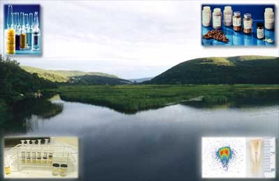

|
International Committee for Radionuclide Metrology (ICRM)
 The International Committee for Radionuclide Metrology (ICRM) is an association of radionuclide metrology laboratories whose membership is composed of delegates of these laboratories together with other scientists (associate members) actively engaged in the study and applications of radioactivity. It explicitly aims at being an international forum for the dissemination of information on techniques, applications and data in the field of radionuclide metrology. This discipline provides a range of tools for tackling a wide variety of problems in numerous other fields, for both basic research and industrial applications. Radionuclide metrology continues to play an important role in the nuclear industry, supporting activities such as radionuclide production, nuclear medicine, measurement of environmental radioactivity and of radionuclides in food and drinking water, decommissioning of nuclear facilities, nuclear security and emergency preparedness, nuclear physics research, etc. Plenary meetings of the ICRM are held biennially and have developed into scientific ICRM conferences, a successful instrument of communication among various specialists, truly encouraging international co-operation. The most recent in the series of ICRM meetings, the "23rd International Conference on Radionuclide Metrology and its Applications, ICRM 2023" was held from 27 to 31 March 2023 in Bucharest and hosted by the Horia Hulubei National Institute for Physics and Nuclear Engineering (IFIN-HH). The proceedings of ICRM 2023 have been published, and select articles are available electronically on ScienceDirect. Additional papers will be published in the ICRM Technical Series (Issue 3) on Radionuclide Metrology, ISSN 2522-4328, to be available later in 2024. The next (24th) ICRM conference (ICRM 2025), organized by the Laboratoire National Henri Becquerel (LNE-LNHB) in Paris, France, will be held in June 2025 in Paris. The contact persons of the local organizing committee are Mark Kellet (mark.kellet@cea.fr), Marie-Christine Lépy (marie-christine.lepy@cea.fr), and Sylvain Leblond (sylvain.leblond@cea.fr). The conference will include formal oral and poster presentations, along with working group meetings to offer the opportunity for scientific discussions. More details will be available on the ICRM 2025 conference website when available. Several ICRM working groups held interim meetings, virtually or in person, in 2022 and 2023, which offered ample opportunity to discuss technical details of specific sub-fields of radionuclide metrology more informally. ICRM member institutions are strongly encouraged to give young researchers the possibility to participate in such interim meetings. For details, contact the Working Group coordinators. The ICRM Low-Level Measurement Techniques (LLRMT) working group’s latest ICRM - Low-Level Radioactivity Measurement Techniques conference, ICRM-LLRMT 2020 Conference (postponed to 2022 due to the COVID-19 pandemic), was a five-day meeting hosted by the INFN-LNGS at the Gran Sasso National Laboratory in Italy, 2-6 May 2022 (https://icrm2022.lngs.infn.it). The next ICRM-LLRMT conference is currently in the planning stages. The ICRM Life Sciences Working Group (LS-WG) is planning a meeting to take place 8-9 April 2024 and hosted by the National Centre for Nuclear Research, Radioisotope Centre POLATOM in Warsaw, Poland. The Registration form can be found here. Note that the Liquid Scintillation Counting Working group (LSC-WG) is also planning a meeting in Warsaw on 11-12 April. There will be an opportunity to visit the POLATOM laboratories on 10 April between the two working group meetings. Please be aware plans are still being finalized. The next intermediate working meeting of the ICRM Gamma Spectrometry Working Group will be held on April 18 -19, 2024, hosted by the CIEMAT (Madrid, Spain). The preliminary agenda, call for abstracts, travel and lodging information, and meeting registration form are now available. Note: This information is made available through the National Institute of Standards and Technology (NIST) facilities. However, the views expressed and the decisions reported do not necessarily connote NIST agreement with, or endorsement of them. Further, NIST does not endorse any commercial products that may be mentioned. Any comments that you provide by e-mail or by submitting an on-line form may be sent to members of the ICRM who may not follow the same NIST privacy practices. Inquiries or comments: lisa.karam@nist.gov Online: January 2001 - Last update: February 2024 |